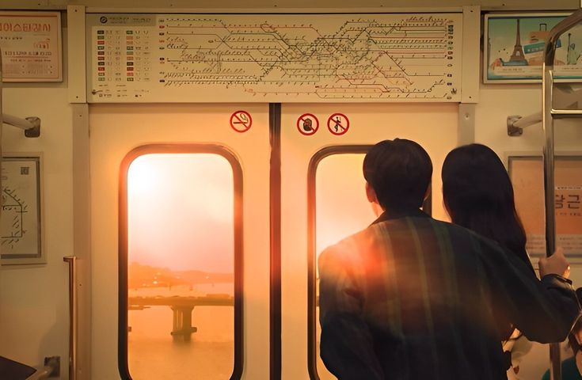
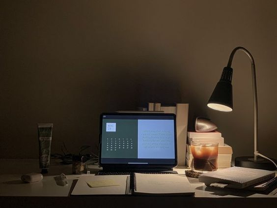

Personal

Widya Luthfiana adalah seorang anak yang selalu ceria, dia lahir di kota Medan si kabupaten deli serdang, dia anak ke2 dari 3 bersaudara. widya tumbud di keluarga yang penuh harapan keluarga nya ingin kalau dia menjadi sukses dan menjadi kebanggaan keluarga. hobinya adalah memasak ia selalu memasak apa pun yang dia sukai, selain memasak ia juga suka mendengarkan lagu, bernyanyi, dan membaca komik.
Pendidikan

Pendidikan Formal
Pengalaman
Saya merasa sekolah telah memberikan banyak peluang untuk berkembang, baik dalam aspek akademik maupun non-akademik, yang membentuk pribadi saya menjadi lebih disiplin, bertanggung jawab, dan memiliki rasa empati terhadap orang lain.
SMP negeri 2 Sunggal

menjadi bendahara di kelas
Semasa saya di smp saya hanya mendapat jabatan menjadi bendahara kelas di SMP saya tidak ada penghargaan apapun untuk menjadi bendahra kelas, tapi di sisi lain saya bisa menjadi orang yang bertanggung jawab untuk memegang barang/kepentingan orang lain
SMKN 9 Medan

Menempuh pembelajaran dengan jurusan Rekayasa Perangkat Lunak
Di saat saya kelas 10 saya masih belum mengerti banyak tentang jurusan saya, bahkan saya dulu tidak mengerti algoritma menjadi seorang programer, tapi kini saya berhasil keluar dari zona itu dan kini saya sudah mengerti apa itu program, web, alur pemograman dan lain lain. tapi saya juga belum menjadi orang yang hebat dan saya juga harus mengembangkan kan skill saya terus menerus.
Contact
Untuk Mengenal Lebih Lanjut dengan saya dapat dihubungi pada akun media sosial berikut ini :